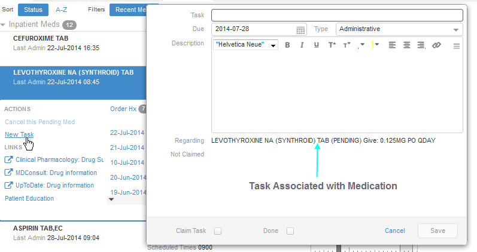

View Inpatient Medications
When you click to open the Inpatient Meds category, the Meds Review plug-in displays a summary list of your patient's inpatient medications. For each medication on the list, the plug-in displays the following items:
- The medication's name
- Its last administration date and time
- Dosage and administration information (81 MG PO QDAY, for example)
- The medication's status (pending or active, for example)
- The medicatiion's category (inpatient or IV, for example)
- The order's expiration date
- The medication's scheduled administration times
In addition, summary information includes a graph that illustrates the times your patient received this medication over successive 24-hour periods. (The graph uses shading to demarkate these periods.)
View administration details
Darkly shaded rectangles on the graph indicate medication administration occurrances. To view details for these occurrances, use your mouse pointer to display a hover hint. Hover hints include the following information:
- The medication's name, dosage, and form (tab, for example)
- Its status (given, for example)
- The units given
- The name of the person who gave the medication (surname, first name format)
- The date and time this person gave the medication
You can scroll the graph forward and backward along successive 24-hour periods by clicking the graph and, keeping your mouse button depressed, dragging your mouse's pointer right or left.

View Medication Details
On the detail view's left side, the Meds Review plug-in includes an Actions menu that enables you to create a new task, which the Meds Review plug-in automatically associates with the medication.
The left side also offers links to knowledge resources called Infobuttons and a set of buttons (Order Hx and Admin Hx) that you can click to display either the medication's order or administration history, respectively. The numbers on the buttons' right sides indicate the number of items in each history.
When you select the Order Hx button, the plug-in displays a date-centric list of orders for the medication, flagging the active order if an active order exists. When you select an order from this list, the detail view's right side displays the following information:
- The medication's name, form, and status
- Its order number
- The order's dose and schedule information
- The provider's name (surname,first name format)
- The pharmacist's name (surname, first name format)
- The location
- The facility
When you select the Admin Hx button, the plug-in displays each administration's date, time, and status (given, for example).